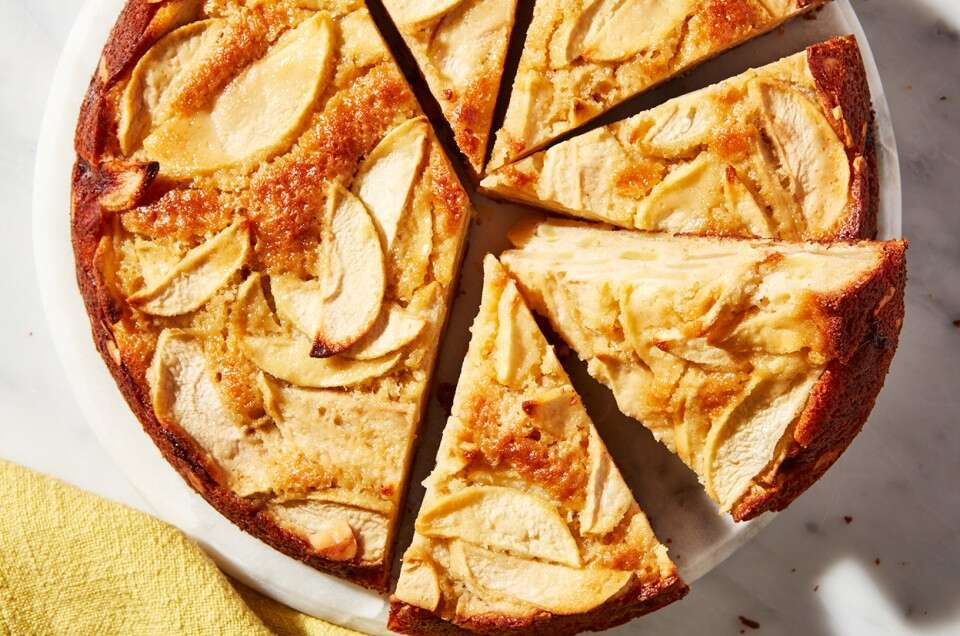

Apple cake recipe

Ingredients
- 3/4 cup (90g) King Arthur Unbleached All-Purpose Flour or King Arthur Gluten-Free Measure for Measure Flour
- 1/4 cup (24g) King Arthur Almond Flour
- 1 teaspoon baking powder
- 1/2 teaspoon salt
- 6 tablespoons (85g) unsalted butter, melted
- 2 large eggs, at room temperature
- 3/4 cup (160g) light brown sugar, packed
- 1/2 teaspoon almond extract
- 2 tsp vanilla extract
- 3 apples, peeled and sliced about 1/4" thick (4 1/2 cups or 550g)
Method
- Preheat the oven to 350°F.
- Lightly grease the bottom of an 8" or 9" springform pan or round cake pan (this will help the parchment adhere), then line the bottom with a parchment round. Generously butter the parchment and sides of the pan with the softened butter. Sprinkle with the sliced almonds, a bit at a time, pressing gently to adhere them to the pan. Your coating won’t be perfectly even, and that’s OK.
- Weigh your flours; or measure them by gently spooning into a cup, then sweeping off any excess. In a medium bowl, whisk together the flours, baking powder, and salt.
- In a large bowl, whisk together the melted butter, eggs, sugar, and extract until creamy, lighter in color, and slightly foamy, about 30 seconds to 1 minute. Whisk in the dry ingredients until just combined.
- Use a rubber spatula to fold the apples into the batter until evenly coated. (It will look like there isn’t much batter, but don’t panic.)
- Scrape the batter into the prepared pan and use your spatula to nudge the apples into a mostly-even layer.
- Bake until golden-brown on top and a toothpick or paring knife inserted into the center comes out clean, about 50 to 55 minutes.
- Remove the cake from the oven and let cool for 15 minutes on a wire rack. Run a paring knife or offset spatula around the edges of pan, then, if using a springform, release sides of pan; or, if using a cake pan, invert it onto a rack or plate, remove the parchment, and turn it back over, top-side up, onto a wire rack. Let cool for at least 15 minutes more. For the neatest pieces, slice with a sharp serrated knife, which will help you saw through the apple pieces rather than crushing them.
- Transfer the cake to a serving plate and ice the cake all over with the chocolate icing, using a palette knife.
Back to Homepage